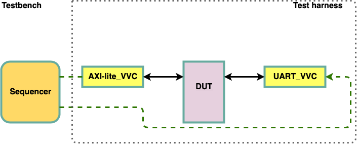
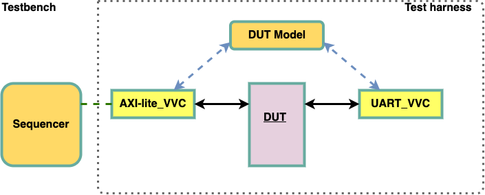
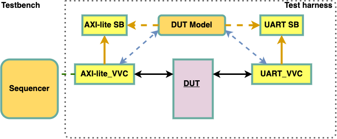

VVC Framework¶
Common VVC Methods¶
All VVC procedures are defined in td_vvc_framework_common_methods_pkg.vhd and ti_vvc_framework_support_pkg.vhd
All parameters in brackets are optional.
await_completion()¶
Tells the VVC to await the completion of either all pending commands or a specified command index. A message will be logged before and at the end of the wait. The procedure will report an alert if not all commands have completed within the specified timeout. The severity of this alert will be TB_ERROR. It is also possible to broadcast and multicast.
To await the completion of one out of several VVCs in a group use the overload with the vvc_info_list. The vvc_info_list of type t_vvc_info_list (protected type) is a local variable that needs to be declared in the sequencer. This overload will block the sequencer while waiting, but not the VVCs, so they can continue to receive commands from other sequencers.
Important
To use the vvc_info_list, the package
uvvm_vvc_framework.ti_protected_types_pkg.allmust be included in the testbench.The command with the vvc_info_list requires VVCs supporting the VVC activity register introduced in UVVM release v2020.05.19
-- Old method
await_completion(vvc_target, vvc_instance_idx, [vvc_channel], [wanted_idx], timeout, [msg, [scope]])
await_completion(VVC_BROADCAST, timeout, [msg, [scope]])
-- New method
await_completion(vvc_select, [vvc_info_list], timeout, [list_action, [msg, [scope]]])
Object |
Name |
Dir. |
Type |
Description |
|---|---|---|---|---|
signal |
vvc_target |
inout |
t_vvc_target_record |
VVC target type compiled into each VVC in order to differentiate between VVCs |
constant |
vvc_instance_idx |
in |
integer |
Instance number of the VVC used in this method |
constant |
vvc_channel |
in |
t_channel |
The VVC channel of the VVC instance used in this method |
constant |
vvc_select |
in |
Selects whether to await for any of the VVCs in the list, all of the VVCs in the list or all the registered VVCs in the testbench (broadcast) |
|
constant |
vvc_info_list |
in |
A list of protected type containing one or several VVC IDs (name, instance, channel) & command index. VVC IDs and corresponding command index can be added to the list by using the procedure add() from the t_vvc_info_list |
|
constant |
timeout |
in |
time |
The maximum time to await completion of a specified command, or all pending commands. An alert of severity ERROR will be triggered if the awaited time is equal to the specified timeout. |
constant |
wanted_idx |
in |
natural |
The index to be fetched or awaited |
constant |
list_action |
in |
An enumerated type to either keep the VVC IDs or remove them from the list after await_completion() has finished. Default value is CLEAR_LIST. |
|
constant |
msg |
in |
string |
A custom message to be appended to the log when the method is executed. Default value is “”. |
constant |
scope |
in |
string |
Describes the scope from which the log/alert originates. Default value is C_VVC_CMD_SCOPE_DEFAULT. |
-- Examples (old method):
await_completion(SBI_VVCT, 1, 16 ns, "Wait for SBI instance 1 to finish", C_SCOPE);
await_completion(SBI_VVCT, 1, v_cmd_idx, 100 ns, "Wait for sbi_read to finish", C_SCOPE);
-- Multicast:
await_completion(SBI_VVCT, ALL_INSTANCES, 100 ns, "Wait for all SBI instances to finish", C_SCOPE);
await_completion(UART_VVCT, 1, ALL_CHANNELS, 100 ns, "Wait for all UART channels from instance 1 to finish", C_SCOPE);
-- Broadcast:
await_completion(VVC_BROADCAST, 1 ms, "Wait for all the VVCs to finish", C_SCOPE)
-- Examples (new method):
variable my_vvc_info_list : t_vvc_info_list;
...
my_vvc_info_list.add("SBI_VVC", 1);
my_vvc_info_list.add("AXISTREAM_VVC", 3, v_cmd_idx);
my_vvc_info_list.add("UART_VVC", ALL_INSTANCES, ALL_CHANNELS);
await_completion(ANY_OF, my_vvc_info_list, 1 ms, KEEP_LIST, "Wait for any VVC in the list to finish", C_SCOPE);
-- Broadcast:
await_completion(ALL_VVCS, 1 ms, CLEAR_LIST, "Wait for all the VVCs to finish", C_SCOPE);
await_any_completion()¶
Replaced by await_completion(ANY_OF, vvc_info_list, timeout, list_action, msg, scope) above to allow VVCs to accept commands
while waiting for completion. This command still works as previously, but with less functionality than the new
await_completion().
await_any_completion(vvc_target, vvc_instance_idx, [vvc_channel], [wanted_idx], lastness, [timeout, [msg, [awaiting_completion_idx, [scope]]]])
Warning
This procedure will soon be deprecated and removed. For details and examples for using this call see UVVM release v2020.05.12 or any earlier releases.
enable_log_msg()¶
Instructs the VVC to enable a given log ID. This call will be forwarded to the UVVM Utility Library enable_log_msg() function. It is also possible to broadcast and multicast.
enable_log_msg(vvc_target, vvc_instance_idx, [vvc_channel], msg_id, [msg, [quietness, [scope]]])
enable_log_msg(VVC_BROADCAST, msg_id, [msg, [quietness, [scope]]])
Object |
Name |
Dir. |
Type |
Description |
|---|---|---|---|---|
signal |
vvc_target |
inout |
t_vvc_target_record |
VVC target type compiled into each VVC in order to differentiate between VVCs |
constant |
vvc_instance_idx |
in |
integer |
Instance number of the VVC used in this method |
constant |
vvc_channel |
in |
t_channel |
The VVC channel of the VVC instance used in this method |
constant |
msg_id |
in |
t_msg_id |
The ID to enable/disable with enable/disable_log_msg(). For more info, see the UVVM-Util documentation. |
constant |
quietness |
in |
Logging of this procedure can be turned off by setting quietness=QUIET. Default value is NON_QUIET. |
|
constant |
msg |
in |
string |
A custom message to be appended to the log when the method is executed. Default value is “”. |
constant |
scope |
in |
string |
Describes the scope from which the log/alert originates. Default value is C_VVC_CMD_SCOPE_DEFAULT. |
-- Examples:
enable_log_msg(SBI_VVCT, 1, ID_LOG_BFM, "Enabling SBI BFM logging");
enable_log_msg(UART_VVCT, 1, TX, ID_LOG_BFM, "Enabling UART TX BFM logging", NON_QUIET, C_SCOPE);
-- Broadcast:
enable_log_msg(VVC_BROADCAST, ID_LOG_BFM, "Enabling BFM logging for all VVCs", NON_QUIET, C_SCOPE);
disable_log_msg()¶
Instructs the VVC to disable a given log ID. This call will be forwarded to the UVVM Utility Library disable_log_msg() function. It is also possible to broadcast and multicast.
disable_log_msg(vvc_target, vvc_instance_idx, [vvc_channel], msg_id, [msg, [quietness, [scope]]])
disable_log_msg(VVC_BROADCAST, msg_id, [msg, [quietness, [scope]]])
Object |
Name |
Dir. |
Type |
Description |
|---|---|---|---|---|
signal |
vvc_target |
inout |
t_vvc_target_record |
VVC target type compiled into each VVC in order to differentiate between VVCs |
constant |
vvc_instance_idx |
in |
integer |
Instance number of the VVC used in this method |
constant |
vvc_channel |
in |
t_channel |
The VVC channel of the VVC instance used in this method |
constant |
msg_id |
in |
t_msg_id |
The ID to enable/disable with enable/disable_log_msg(). For more info, see the UVVM-Util documentation. |
constant |
quietness |
in |
Logging of this procedure can be turned off by setting quietness=QUIET. Default value is NON_QUIET. |
|
constant |
msg |
in |
string |
A custom message to be appended to the log when the method is executed. Default value is “”. |
constant |
scope |
in |
string |
Describes the scope from which the log/alert originates. Default value is C_VVC_CMD_SCOPE_DEFAULT. |
-- Examples:
disable_log_msg(SBI_VVCT, 1, ID_LOG_BFM, "Disabling SBI BFM logging");
disable_log_msg(UART_VVCT, 1, TX, ID_LOG_BFM, "Disabling UART TX BFM logging", NON_QUIET, C_SCOPE);
-- Broadcast:
disable_log_msg(VVC_BROADCAST, ALL_MESSAGES, "Disables all messages in all VVCs", NON_QUIET, C_SCOPE);
flush_command_queue()¶
Flushes the VVC command queue for the specified VVC target/channel. The procedure will log information with log ID ID_IMMEDIATE_CMD. It is also possible to broadcast and multicast.
flush_command_queue(vvc_target, vvc_instance_idx, [vvc_channel], [msg, [scope]])
flush_command_queue(VVC_BROADCAST, [msg, [scope]])
Object |
Name |
Dir. |
Type |
Description |
|---|---|---|---|---|
signal |
vvc_target |
inout |
t_vvc_target_record |
VVC target type compiled into each VVC in order to differentiate between VVCs |
constant |
vvc_instance_idx |
in |
integer |
Instance number of the VVC used in this method |
constant |
vvc_channel |
in |
t_channel |
The VVC channel of the VVC instance used in this method |
constant |
msg |
in |
string |
A custom message to be appended to the log when the method is executed. Default value is “”. |
constant |
scope |
in |
string |
Describes the scope from which the log/alert originates. Default value is C_VVC_CMD_SCOPE_DEFAULT. |
-- Examples:
flush_command_queue(SBI_VVCT, 1, "Flushing command queue", C_SCOPE);
-- Broadcast:
flush_command_queue(VVC_BROADCAST, "Flushing command queues", C_SCOPE);
fetch_result()¶
Fetches a stored result using the command index. A result is stored when using e.g. the read or receive commands in a VVC. The fetched result is available on the result output. The Boolean output fetch_is_accepted is used to indicate if the fetch was successful or not. A fetch can fail if e.g. the wanted_idx did not have a result to store, or the wanted_idx read has not yet been executed. Omitting the fetch_is_accepted parameter causes the parameters to be checked automatically in the procedure. On successful fetch, a message with log ID ID_UVVM_CMD_RESULT is logged.
fetch_result(vvc_target, vvc_instance_idx, [vvc_channel], wanted_idx, result, [fetch_is_accepted], [msg, [alert_level, [scope]]])
Object |
Name |
Dir. |
Type |
Description |
|---|---|---|---|---|
signal |
vvc_target |
inout |
t_vvc_target_record |
VVC target type compiled into each VVC in order to differentiate between VVCs |
constant |
vvc_instance_idx |
in |
integer |
Instance number of the VVC used in this method |
constant |
vvc_channel |
in |
t_channel |
The VVC channel of the VVC instance used in this method |
constant |
wanted_idx |
in |
natural |
The index to be fetched or awaited |
variable |
result |
out |
t_vvc_result |
The output where the fetched data is to be placed |
variable |
fetch_is_accepted |
out |
boolean |
Whether the fetch command was accepted or not. Will be false if the specified command idx has not been stored. |
constant |
msg |
in |
string |
A custom message to be appended to the log when the method is executed. Default value is “”. |
constant |
alert_level |
in |
The alert level used when the command is not accepted. Default value is TB_ERROR. |
|
constant |
scope |
in |
string |
Describes the scope from which the log/alert originates. Default value is C_VVC_CMD_SCOPE_DEFAULT. |
-- Examples:
fetch_result(SBI_VVCT,1, v_cmd_idx, v_data, v_is_ok, "Fetching read-result", C_SCOPE);
-- Full example:
sbi_read(SBI_VVCT, 1, C_ADDR_FIFO_GET, "Read from FIFO");
v_cmd_idx := get_last_received_cmd_idx(SBI_VVCT,1); -- Retrieve the command index
await_completion(SBI_VVCT, 1, v_cmd_idx, 100 ns, "Wait for sbi_read to finish");
fetch_result(SBI_VVCT, 1, v_cmd_idx, v_data, v_is_ok, "Fetching read-result");
check_value(v_is_ok, ERROR, "Readback OK via fetch_result()");
insert_delay()¶
Inserts a delay of delay clock cycles or delay seconds in the VVC. It is also possible to broadcast and multicast.
insert_delay(vvc_target, vvc_instance_idx, [vvc_channel], delay, [msg, [scope]])
insert_delay(VVC_BROADCAST, delay, [msg, [scope]])
Object |
Name |
Dir. |
Type |
Description |
|---|---|---|---|---|
signal |
vvc_target |
inout |
t_vvc_target_record |
VVC target type compiled into each VVC in order to differentiate between VVCs |
constant |
vvc_instance_idx |
in |
integer |
Instance number of the VVC used in this method |
constant |
vvc_channel |
in |
t_channel |
The VVC channel of the VVC instance used in this method |
constant |
delay |
in |
time or natural |
Delay to be inserted as time or number of clock cycles |
constant |
msg |
in |
string |
A custom message to be appended to the log when the method is executed. Default value is “”. |
constant |
scope |
in |
string |
Describes the scope from which the log/alert originates. Default value is C_VVC_CMD_SCOPE_DEFAULT. |
-- Examples:
insert_delay(SBI_VVCT,1, 50 ns, "50 ns delay", C_SCOPE);
insert_delay(SBI_VVCT,1, 100, "100T delay", C_SCOPE);
-- Broadcast:
insert_delay(VVC_BROADCAST, 50 ns, "Insert 50 ns delay to all VVCs", C_SCOPE);
terminate_current_command()¶
Terminates the current command in the VVC, if the currently running BFM command supports the terminate signal. It is also possible to broadcast and multicast.
terminate_current_command(vvc_target, vvc_instance_idx, [vvc_channel], [msg, [scope]])
terminate_current_command(VVC_BROADCAST, [msg, [scope]])
Object |
Name |
Dir. |
Type |
Description |
|---|---|---|---|---|
signal |
vvc_target |
inout |
t_vvc_target_record |
VVC target type compiled into each VVC in order to differentiate between VVCs |
constant |
vvc_instance_idx |
in |
integer |
Instance number of the VVC used in this method |
constant |
vvc_channel |
in |
t_channel |
The VVC channel of the VVC instance used in this method |
constant |
msg |
in |
string |
A custom message to be appended to the log when the method is executed. Default value is “”. |
constant |
scope |
in |
string |
Describes the scope from which the log/alert originates. Default value is C_VVC_CMD_SCOPE_DEFAULT. |
-- Examples:
terminate_current_command(SBI_VVCT, 1, "Terminating current command", C_SCOPE);
-- Broadcast:
terminate_current_command(VVC_BROADCAST, "Terminating current command in all VVCs", C_SCOPE);
terminate_all_commands()¶
Terminates the current command in the VVC, if the currently running BFM command supports the terminate signal. The procedure also flushes the VVC command queue, removing all pending commands. It is also possible to broadcast and multicast.
terminate_all_commands(vvc_target, vvc_instance_idx, [vvc_channel], [msg, [scope]])
terminate_all_commands(VVC_BROADCAST, [msg, [scope]])
Object |
Name |
Dir. |
Type |
Description |
|---|---|---|---|---|
signal |
vvc_target |
inout |
t_vvc_target_record |
VVC target type compiled into each VVC in order to differentiate between VVCs |
constant |
vvc_instance_idx |
in |
integer |
Instance number of the VVC used in this method |
constant |
vvc_channel |
in |
t_channel |
The VVC channel of the VVC instance used in this method |
constant |
msg |
in |
string |
A custom message to be appended to the log when the method is executed. Default value is “”. |
constant |
scope |
in |
string |
Describes the scope from which the log/alert originates. Default value is C_VVC_CMD_SCOPE_DEFAULT. |
-- Examples:
terminate_all_commands(SBI_VVCT, 1, "Terminating all commands", C_SCOPE);
-- Broadcast:
terminate_all_commands(VVC_BROADCAST, "Terminating all commands in all VVCs", C_SCOPE);
get_last_received_cmd_idx()¶
Gets the command index of the last command received by the VVC interpreter. Necessary for getting the command index of a read for fetch_result.
get_last_received_cmd_idx(vvc_target, vvc_instance_idx, [vvc_channel, [scope]])
Object |
Name |
Dir. |
Type |
Description |
|---|---|---|---|---|
signal |
vvc_target |
inout |
t_vvc_target_record |
VVC target type compiled into each VVC in order to differentiate between VVCs |
constant |
vvc_instance_idx |
in |
integer |
Instance number of the VVC used in this method |
constant |
vvc_channel |
in |
t_channel |
The VVC channel of the VVC instance used in this method |
constant |
scope |
in |
string |
Describes the scope from which the log/alert originates. Default value is C_VVC_CMD_SCOPE_DEFAULT. |
-- Examples:
v_cmd_idx := get_last_received_cmd_idx(SBI_VVCT, 1, C_SCOPE);
Broadcasting and Multicasting¶
Commands in UVVM can be distributed to all instances of a VVC or to all VVCs using dedicated parameters.
VVC_BROADCAST¶
The VVC_BROADCAST command parameter can be used when a command is to target all VVCs within the test environment, reducing the number of command instructions needed in the testbench.
-- Examples:
enable_log_msg(VVC_BROADCAST, ALL_MESSAGES); -- enable logging for all VVCs
await_completion(VVC_BROADCAST, 10 us); -- wait for all VVCs to complete
ALL_INSTANCES¶
The ALL_INSTANCES command parameter can be used when a command is targeting all instances of a VVC within the test environment, reducing the number of command instructions needed in the testbench.
-- Examples:
enable_log_msg(SBI_VVCT, ALL_INSTANCES, ALL_MESSAGES); -- enable logging for all instances of SBI_VVCT
await_completion(SBI_VVCT, ALL_INSTANCES, 100 ns); -- wait for all instances of SBI_VVCT to complete
ALL_CHANNELS¶
The ALL_CHANNELS command parameter can be used when a command is targeting all channels of a VVC within the test environment, reducing the number of command instructions needed in the testbench.
-- Examples:
enable_log_msg(UART_VVCT, 1, ALL_CHANNELS, ALL_MESSAGES); -- enable logging for all channels of UART_VVCT instance 1
await_completion(UART_VVCT, ALL_INSTANCES, ALL_CHANNELS, 100 ns); -- wait for all instances and channels of UART_VVCT to complete
C_VVCT_ALL_INSTANCES¶
See description above. C_VVCT_ALL_INSTANCES = ALL_INSTANCES.
Warning
This command parameter might be removed in a future release and we encourage the use of ALL_INSTANCES.
Essential Mechanisms¶
This section explains some of the essential mechanisms necessary for running VVC Framework, in addition to helpful and important VVC status and configuration records which are accessible directly from the testbench. More details on the VVC Framework and the command mechanism can be found in the VVC Framework Manual.
Libraries¶
In order to use a VVC the following libraries need to be included:
library uvvm_util;
context uvvm_util.uvvm_util_context;
library uvvm_vvc_framework;
use uvvm_vvc_framework.ti_vvc_framework_support_pkg.all;
library bitvis_vip_<name>;
context bitvis_vip_<name>.vvc_context;
UVVM Initialization¶
The following mechanisms are required for running UVVM VVC Framework:
ti_uvvm_engine¶
This entity contains a process that will initialize the UVVM environment, and has to be instantiated in the testbench harness, or alternatively in the top-level testbench.
-- Example:
i_ti_uvvm_engine : entity uvvm_vvc_framework.ti_uvvm_engine;
await_uvvm_initialization()¶
This procedure is a blocking procedure that has to be called from the testbench sequencer, prior to any VVC calls, to ensure that the UVVM engine has been initialized and is ready. This procedure will check the shared_uvvm_state on each delta cycle until the UVVM engine has been initialized. Note that this method is depending on the ti_uvvm_engine mechanism.
-- Example:
await_uvvm_initialization(VOID);
VVC Status, Configuration and Transaction Information¶
The VVC status, configuration and transaction information records are defined in each individual VVC methods package.
Each VVC instance and channel can be configured and useful information can be accessed from the testbench via dedicated shared variables.
From the VVC configuration shared variable, one is given the ability to tailor each VVC to one’s needs, in addition to access the BFM configuration record via the bfm_config identifier. In addition to BFM configuration possibility, the configuration settings consist of command and result queue settings, BFM access separation delay and a VVC dedicated message ID panel. Note that some BFMs require user configuration, e.g. the bit_time setting in serial interface BFMs.
The VVC status shared variable provide access to the command status parameters for each of the VVCs, such as the current and previous command index, and the number of pending commands in the VVCs command queue. This provide a helpful tool, e.g. when synchronizing VVCs in the test sequencer using the await_completion() or await_any_completion() methods.
When using a wave viewer during simulation, the transaction shared variable provides helpful information regarding current VVC operation and transaction information such as address and data. Note that the accessible fields depend on the VVC and its implementation. An example of two SBI VVCs performing FIFO write operations, followed by check operations, is shown in Figure 1.
{kind=link}
Activity Watchdog¶
UVVM VVC Framework has an activity watchdog mechanism which all Bitvis VVCs support. All VVCs can be automatically registered in a centralized VVC activity register at start-up and will, during simulation, update the VVC activity register with their current activity status, i.e. ACTIVE or INACTIVE, which again is monitored by the activity watchdog. A timeout counter in the activity watchdog will start after the last update has occurred in the VVC activity register, and the timeout counter is reset on any VVC activity. An alert will be raised if none of the VVCs have an activity prior to the timeout counter reaching the specified timeout value. Note that the activity watchdog will continue to monitor VVC activity, even after a timeout, until alert stop limit is reached.
The activity watchdog has to be included as a concurrent procedure parallel to the testbench sequencer or in the test harness in order to be activated. Note that the activity watchdog will raise a TB_WARNING if the number of expected VVCs does not match the number of registered VVCs in the VVC activity register, and that leaf VVCs (e.g. channels such as UART RX and TX) are counted individually. This checking can be disabled by setting the number of expected VVCs to 0. Also note that the total number of VVCs registered in the VVC activity register cannot exceed the C_MAX_TB_VVC_NUM count, default set to 20 in the adaptations_pkg.vhd, and this will result in a TB_ERROR raised by the VVC activity register.
Note that some VVCs should not be monitored by the activity watchdog. This currently applies to the clock generator VVC, as this VVC may continue to be active even after all other testbench activity has stopped. This VVC will have to be included in the number of expected VVCs registered in the VVC activity register but will not have any effect on the activity watchdog timeout counter.
Name |
Type |
Default |
Description |
|---|---|---|---|
num_exp_vvc |
natural |
<none> |
Expected number of VVCs which is expected to be registered in
the VVC activity register (including any clock generator VVC).
Note 1: each channel is counted as an independent VVC expected
to be registered in the VVC activity register.
Note 2: setting num_exp_vvc = 0 will disable checking of number
of expected VVCs vs actual number of VVCs registered in the VVC
activity register.
|
timeout |
time |
<none> |
Timeout value after last VVC activity. |
alert_level |
TB_ERROR |
The timeout will have this alert level. |
|
msg |
string |
"Activity Watchdog" |
Message included with activity watchdog log messages, e.g. name of activity watchdog. |
-- Example:
p_activity_watchdog:
activity_watchdog(num_exp_vvc => 3, timeout => C_ACTIVITY_WATCHDOG_TIMEOUT);
Distribution of Transaction Info - From VVCs and/or Monitors¶
UVVM supports sharing transaction information in a controlled manner within the complete testbench environment. This allows VVCs and Monitors to provide transaction info to any other part of your testbench – using a predefined structured mechanism. This makes it even easier to make good VHDL testbenches.
Transaction information may be used in many different ways, but the main purpose is to share information inside the testbench of activity or accesses on a given DUT interface. Such information could typically be provided from a dedicated interface Monitor, but making such a dedicated Monitor is sometimes quite time consuming and often not really needed. For that reason, UVVM provides a mechanism for getting the transaction information directly from the VVC.
Purpose¶
By enabling the distribution of transaction info, models or any other parts of the testbench can see exactly what accesses have been made on the various interfaces of the DUT, so that the expected DUT behaviour and outputs may be checked. Let us illustrate this with a really simple testbench scenario to verify a UART peripheral with an AXI-lite register/CPU interface on one side and the UART RX and TX ports on the other side. The test sequencer may command the AXI-lite BFM or VVC to write a data byte into the UART TX register, and then it must be checked that the data byte is transmitted out on the DUT TX output some time later.
A simple testbench approach could be to have the test sequencer also telling the receiving UART BFM or VVC exactly what to expect. This is a straightforward approach, but requires more action and data control inside the test sequencer. This could of course all be handled in a super-procedure, but for any undetermined behaviour inside the BFM or VVC, like random data generation or error injection, that would not work. See Figure 2.
A more advanced approach is to have a model overlooking the DUT accesses, generate the expected data and tell the receiving BFM or VVC to check for that data. See Figure 3.
An even more advanced approach would be to use a Scoreboard to check received data (from DUT via VVC) against expected data from a model. See Figure 4.
However, for the two latter approaches the model needs information about exactly what happened (the transaction) on the various DUT interfaces, so that it can generate the correct expected data. For the model it doesn’t matter if the transaction info comes from a Monitor or from a VVC, as long as the information is correct.
The model could of course look at the interfaces and analyse the actual transactions, but distributing this task to the VVC or Monitor makes the testbench far more structured and significantly improves overview, maintenance, extensibility and reuse – at least for anything above medium simple verification challenges.
Another purpose of providing transaction information is for progress viewing and debugging – typically via the wave view or simulation transcripts.

Figure 2 Distribution of Transaction Info Approach A¶ |

Figure 3 Distribution of Transaction Info Approach B¶ |

Figure 4 Distribution of Transaction Info Approach C¶ |
Transaction definitions¶
By transactions we normally talk about a complete end to end transfer of data across an interface. This could be anything from a simple write, read or transfer of a single word - to a complete packet in a packet-oriented protocol like Ethernet. The word transaction is however also used for both sub-sets and super-sets of this – depending on the protocol and even on how we want to control our system or testbench. In order to communicate properly and to assure that transactions are properly understood, the following terms are defined:
Base transaction (BT) is the lowest level of a complete transaction as allowed from the central sequencer. E.g. AXI-lite, UART, Ethernet and AXI-Stream transactions.
Sub-transaction (ST) is the lowest level of an incomplete transaction as allowed from a BFM. The sub-transaction as such is complete seen from a handshake point of view, but the transfer of data is not complete. A split transaction protocol will typically have sub-transactions. E.g. Avalon Read Request and Avalon Read Response.
Leaf transaction (LT) is not a transaction type in itself, but is the lowest level of complete or incomplete transaction defined for a given protocol. I.e. a sub-transaction when this is defined for a given protocol, otherwise a base transaction. This definition is needed in order simplify various explanations. E.g. for Avalon: LT = the sub transactions, and for UART, SBI or Ethernet: LT = the base transactions (as no sub-transaction exist for these protocols)
Compound transaction (CT) is a set of transactions or other methods or statements that as a total is doing a more complex operation. A compound transaction involves calling multiple base transactions. E.g. sbi_poll_until() or a UART transmit of N consecutive bytes. No compound transaction needs to be defined.
Transaction information¶
Information about the above transactions is typically provided to a model in the test harness. Depending on whether the transaction info is provided from the VVC or Monitor, different types of information will be available. Common for both is that they always provide info about the operation (read, write, transmit, etc.) and often also any other protocol specific info. For a UART this could be data and parity, for an SBI it could be address and data, and for Ethernet, the packet fields.
This minimum is normally what the Monitor can provide from just analysing the interface, and this is also normally enough for a model to generate expected DUT outputs. The VVC on the other hand, can provide more info, which could be useful for instance for progress viewing and debugging.
The transaction information is organised as a transaction record with some predefined fields as shown below. Table 1 shows the general transaction record, whereas table 2 shows a concrete example for the SBI.
Note that for a given interface/protocol, the VVC and the Monitor will use the same interface dedicated transaction record type - with some fields potentially unused.
Field |
Type |
Description |
|---|---|---|
operation |
t_operation |
Protocol operation on the given DUT interface. E.g. NO_OPERATION,
WRITE, READ, TRANSMIT, POLL_UNTIL, …
NO_OPERATION is default and thus used when there is no access.
All operations will be separated with a NO_OPERATION for at least
1 delta cycle, e.g. NO_OPERATION - WRITE - NO_OPERATION - READ -
NO_OPERATION.
|
<optional protocol
dedicated
field(s)>
|
<protocol dedicated> |
One or more fields required to complete the transaction info.
E.g. for UART: single field ‘data’; for SBI: field 1: ‘addr’,
field 2: ‘data’; for Ethernet: most Ethernet fields as separate
fields, or a better solution, include as a complete sub-record.
|
transaction_status |
t_transaction_status |
Handled slightly different from a VVC and a Monitor.
VVC: Will show ‘IN_PROGRESS’ during the transaction and INACTIVE
in between (for at least one delta cycle).
Monitor: Will show FAILED or SUCCEEDED immediately as soon as
this is 100% certain - and keep this info for the display period
defined in the Monitor configuration record, or until the start
of the next transaction,
whichever occurs first. Other than that, it will show IN_PROGRESS
when active or INACTIVE when not.
|
vvc_meta |
t_vvc_meta |
Additional transaction information - only known by the VVC. So far ‘msg’ and ‘cmd_idx’ (the free running command index). A Monitor has no knowledge of this and will set them to msg = “”, cmd_idx = -1 |
error_info |
t_error_info |
Any type of error injection relevant for the given protocol. Typically parity or stop-bit error in an UART or a CRC error in an Ethernet. If no error injection or detection has been implemented, this sub-record may be left out. |
Note: For transaction info from a VVC, the record reflects the command status, i.e. the status assumed by the VVC when
initiating the command, whereas the Monitor will set up the record only after knowing whether the transaction has failed
or succeeded.
The VVC does not know the BFM status, and this is fine because the BFM will issue an alert for unexpected behaviour.
|
||
Field |
Type |
Description |
|---|---|---|
operation |
t_operation |
Either of WRITE, READ or CHECK, but could also be POLL_UNTIL or a more complex compound transaction |
address |
unsigned |
|
data |
std_logic_vector |
|
transaction_status |
t_transaction_status |
|
vvc_meta |
t_vvc_meta |
|
Note: No error_info field as no error injection or detection has been implemented in neither VVC nor Monitor - at this stage. |
||
Other interfaces will of course have different protocol dedicated fields, or even a complete protocol dedicated sub-record (e.g. for Ethernet packet fields).
Transaction Info transfer¶
In order to reduce the number of signals from a VVC or Monitor, all possible simultaneous transactions (and their transaction records) are collected into a single transaction group record. For an SBI interface, this will consist of a BT record and potentially a CT record. Whereas for an Avalon, it will in addition also consist of two ST records, because for instance a read request may be active at the same time as a read response. (And the sub-transactions are part of a base transaction and may also be part of a CT).
Table 3 shows the maximum transaction group record for an SBI, whereas Table 4 shows the maximum transaction group record for an Avalon. The bold CT is optional for both, and thus depends on whether CTs have been defined in the VVC. Multiple parallel STs may be written to the transaction group record simultaneously - as these are handled by different “threads” (concurrent statements like a process).
A Monitor cannot know about CTs, and thus a Monitor will never fill in that sub-record. A Monitor for a split transaction protocol (i.e. with multiple STs) may or may not provide BT info. If it does, this should normally be implemented in a higher level “wrapper”.
Note
A VVC will update its Transaction Info leaf transaction details at the start of the transaction when the BFM is called. and turned off when BFM is finished.
A Monitor will set its Transaction Info record after the transaction is finished (or transaction status is known) and keep it on for a pre-defined time - or until the next transaction is finished if earlier.
Hint
It is recommended that the model (or any other user of Transaction Info) triggers on the VVC/Monitor trigger signal and checks when transaction_status is changing to ‘INACTIVE’ and then sample <signal>’last_value.
Field |
Type |
Description |
|---|---|---|
bt |
t_transaction |
Base transaction |
ct |
t_transaction |
Compound transaction |
Field |
Type |
Description |
|---|---|---|
st_request |
t_transaction |
Sub-transaction |
st_response |
t_transaction |
Sub-transaction |
bt |
t_transaction |
Base transaction |
ct |
t_transaction |
Compound transaction |
Transaction Info record signals¶
The Transaction Info record is provided out of the VVC and Monitor using sets of a global signal and a shared variable. These and all Transaction Info related VHDL types are defined in transaction_pkg.vhd, located in the VIP src folder.
Monitor trigger signal : global_<protocol-name>_monitor_transaction_trigger, e.g. global_uart_monitor_transaction_trigger
Monitor shared variable : shared_<protocol-name>_monitor_transaction_info, e.g. shared_uart_monitor_transaction_info
VVC trigger signal: global_<protocol-name>_vvc_transaction_trigger, e.g. global_uart_vvc_transaction_trigger.
VVC shared variable : shared_<protocol-name>_vvc_transaction_info, e.g, shared_uart_vvc_transaction_info. The VVC is also responsible for filling out the vvc_meta record field.
Name |
Type |
Default |
Description |
|---|---|---|---|
bt |
t_transaction |
C_TRANSACTION_SET_DEFAULT |
Transaction Info record entry for base transaction |
-> operation |
t_operation |
NO_OPERATION |
Equal to VVC transaction operation, e.g. TRANSMIT, RECEIVE and EXPECT (UART) |
-> address 1 |
unsigned |
0x0 |
DUT access read or write address |
-> data |
std_logic_vector |
0x0 |
DUT read or write data |
-> vvc_meta |
t_vvc_meta |
C_VVC_META_DEFAULT |
Record of meta data belonging to VVC command request resulting in this base transaction |
—> msg |
string |
“” |
Message transmitted with VVC command resulting in this base transaction |
—> cmd_idx |
integer |
-1 |
VVC command index resulting in this base transaction |
-> transaction_status |
t_transaction_status |
C_TRANSACTION_STATUS_DEFAULT |
The current status of transaction. Available statuses are INACTIVE, IN_PROGRESS, FAILED and SUCCEEDED 2 |
-> error_info 3 |
t_error_info |
C_ERRO_INFO_DEFAULT |
Record entry of errors that will be injected to the DUT access transaction |
—> parity_bit_error 4 |
boolean |
False |
The DUT transaction will have a parity bit error if entry is set to true |
—> stop_bir_error 4 |
boolean |
False |
The DUT transaction will have a stop bit error if entry is set to true |
ct 5 |
t_transaction |
C_TRANSACTION_SET_DEFAULT |
Transaction Info record entry for compound transaction
Note that sub-record entries would typically have the same
entries as for a base transaction, and that this entry does
not have to be suited for all interface Transaction Info
records.
|
Note
- 1
Record field address is not applicable for all interface types, e.g. UART, and is only shown here for informational purposes.
- 2
Transaction status FAILED and SUCCEEDED are not applicable for VVC Transaction Info records, but will be used for Monitor Transaction Info records.
- 3
Record field error_info and its sub-record fields can be omitted if no error injection is implemented in the BFM.
- 4(1,2)
error_info sub-record fields parity_bit_error and stop_bit_error are examples of UART error injection.
- 5
Record entry ct will consist of similar record fields as bt, and might not always be necessary. This applies to record entry st as well (not shown here).
Examples of Transaction Info Usage¶
All important information regarding a transfer is available in the transaction info and accessible in the test environment, and depending on one’s needs there are some recommended approaches for how to utilize the transaction info:
For complex protocols, where several combinations of data widths and others are possible, it can be complicated for a VVC to determine the structure and constraints of the scoreboard element. Examples of VVCs with such complex protocols are the AXI Stream and the Avalon ST VVCs. Setting up the Scoreboard and checking of received data against expected data for such complex protocols has to be done in the test harness, where the generic scoreboard is instantiated with a constrained scoreboard element and where a dedicated process monitors the VVC transaction info and checks received data with the scoreboard.
Transaction info can be used in a DUT Model process that monitors and decodes the actual transaction info data in the test harness. The DUT Model will use the decoded transaction info and add expected data to the VVC scoreboard on the DUT receiving side, e.g. to the SBI_VVC_SB while a SBI VVC is responsible for performing the DUT read access and check received data with SBI_VVC_SB. See Transaction Info Purpose, example C, for how a DUT Model will appear in the test harness.
Mechanism¶
The technique of using transaction info in the test environment, either in a VVC scoreboard support process or in a DUT Model, involves the following 3 steps:
Wait for the interface trigger signal to be set.
Decode the base transaction info operation.
Execute wanted operation from the obtained transaction info.
A simple VVC Scoreboard Support process is presented in Figure 5, demonstrating how VVC scoreboard actions can be accomplished using transaction info and a stand-alone process when not performed by a VVC. The same approach is shown in Figure 6 with a simple DUT Model process, demonstrating how DUT modelling can be accomplished using transaction info and a stand-alone process. Note that Figure 5 uses aliasing to simplify and improve code readability, while Figure 6 uses full transaction info names.
p_vvc_sb_support : process
-- transaction info handles
alias sbi_transaction_trigger : std_logic is global_sbi_vvc_transaction_trigger(C_SBI_VVC_1);
alias sbi_transaction_info : bitvis_vip_sbi.transaction_pkg.t_base_transaction is shared_sbi_vvc_transaction_info(C_SBI_VVC_1).bt;
alias uart_rx_transaction_trigger : std_logic is global_uart_vvc_transaction_trigger(RX, C_UART_VVC_1);
alias uart_rx_info : bitvis_vip_uart.transaction_pkg.t_base_transaction is shared_uart_vvc_transaction_info(RX, C_UART_VVC_1).bt;
-- helper variable
variable v_sb_element : std_logic_vector(C_DATA_WIDTH-1 downto 0);
begin
while true loop:
-- Wait for available transaction info
wait until (sbi_transaction_trigger = '1') or (uart_rx_transaction_trigger = '1');
if sbi_transaction_trigger'event then
case sbi_transaction_info.operation is
when READ =>
v_sb_element := sbi_transaction_info.data(C_DATA_WIDTH-1 downto 0);
SBI_VVC_SB.check_received(C_SBI_VVC_1, v_sb_element);
end case;
end if;
if uart_rx_transaction_trigger'event then
case uart_rx_info.operation is
when RECEIVE =>
v_sb_element := uart_rx_info.data(C_DATA_WIDTH-1 downto 0);
UART_VVC_SB.check_received(C_UART_VVC_1, v_sb_element);
end case;
end if;
end loop;
end process p_vvc_sb_support;
Figure 5 demonstrates the setup of a VVC Scoreboard Support process that operates with the 3 steps listed in Transaction Info Mechanism. For simple scoreboard elements, such as std_logic_vector, these scoreboard approaches are already performed by the VVCs.
p_dut_model : process
begin
while true loop:
-- Wait for available transaction info
wait until (global_sbi_vvc_transaction_trigger(C_SBI_VVC_1) = '1') or (global_uart_vvc_transaction_trigger(TX, C_UART_VVC_1) = '1');
if global_sbi_vvc_transaction_trigger(C_SBI_VVC_1)'event then
case shared_sbi_vvc_transaction_info(C_SBI_VVC_1).bt.operation is
when WRITE =>
UART_VVC_SB.add_expected(shared_sbi_vvc_transaction_info(C_SBI_VVC_1).bt.data(C_DATA_WIDTH-1 downto 0));
end case;
end if;
if global_uart_vvc_transaction_trigger(TX, C_UART_VVC_1)'event then
case shared_uart_vvc_transaction_info(TX, C_UART_VVC_1).bt.operation is
when TRANSMIT =>
SBI_VVC_SB.add_expected(shared_uart_vvc_transaction(TX, C_UART_VVC_1).bt.data(C_DATA_WIDTH-1 downto 0));
end case;
end if;
end loop;
end process p_dut_model;
Figure 6 demonstrates the setup of a DUT Model process that operates with the 3 steps listed in Transaction Info Mechanism. For simple scoreboard elements, such as std_logic_vector, these scoreboard approaches are already performed by the VVCs.
Complex Protocols¶
For scoreboards with complex protocols, e.g. AXI Stream and Avalon ST, the same approach as listed in Transaction Info Mechanism applies. The only difference is that the scoreboard element is of a more complex type, i.e. a record element. Figure 7 demonstrates a VVC scoreboard support approach using a complex record element.
-- define complex Avalon ST scoreboard type
type t_avalon_st_element is record
channel_value : std_logic_vector(C_CH_WIDTH-1 downto 0);
data_array : t_slv_array(0 to C_ARRAY_LENGTH-1)(C_WORD_WIDTH-1 downto 0);
end record t_avalon_st_element;
-- create to_string() function for t_avalon_st_element
function avalon_st_element_to_string(
constant rec_element : t_avalon_st_element
) return string is
begin
return "channel value: " & to_string(rec_element.channel_value) & ", data: " & to_string(rec_element.data_array);
end function avalon_st_element_to_string;
-- define Avalon ST scoreboard
package avalon_st_sb_pkg is new bitvis_vip_scoreboard.generic_sb_package
generic map(t_element => t_avalon_st_element,
element_match => "=",
to_string_element => avalon_st_element_to_string);
use avalon_st_sb_pkg.all;
shared variable AVALON_ST_VVC_SB : avalon_st_sb_pkg.t_generic_sb;
...
p_vvc_sb_support : process
-- transaction info handles
alias avalon_st_transaction_trigger : std_logic is global_avalon_st_vvc_transaction_trigger(C_AVALON_ST_VVC_1);
alias avalon_st_transaction_info : bitvis_vip_avalon_st.transaction_pkg.t_base_transaction is
shared_avalon_st_vvc_transaction_info(C_AVALON_ST_VVC_1).bt;
-- helper variable
variable v_sb_element : t_avalon_st_element;
begin
while true loop:
-- Wait for available transaction info
wait until avalon_st_transaction_trigger = '1';
if avalon_st_transaction_trigger'event then
case avalon_st_transaction_info.operation is
when RECEIVE =>
v_sb_element.channel_value := avalon_st_transaction_info.channel_value(C_CH_WIDTH-1 downto 0);
v_sb_element.data_array := avalon_st_transaction_info.data_array(0 to C_ARRAY_LENGTH-1)(C_WORD_WIDTH-1 downto 0);
AVALON_ST_VVC_SB.check_received(C_AVALON_ST_VVC_1, v_sb_element);
end case;
end if;
end loop;
end process p_vvc_sb_support;
Figure 7 demonstrates the setup of a VVC Scoreboard Support process that operates with the 3 steps listed in Transaction Info Mechanism. For complex scoreboard elements, such as records, the scoreboard package declaration, defining the shared variable and scoreboard approaches have to be performed outside the VVC.
VVC Local Sequencers¶
UVVM testbenches may have one or more central sequencers – also known as test sequencers or test drivers. A single test sequencer is recommended in order to reduce complexity – as synchronization between multiple parallel test sequencer could be really complex. UVVM does however also provide support for so called local sequencers. These sequencers will typically run inside the VVCs executor process. The executor will typically run a single transaction via a BFM procedure towards the DUT interface, like an sbi_write() or uart_expect() procedure. For more advanced VVCs it would however make sense to send even higher level commands to a VVC, like requesting it to transmit N random bytes, or setting up a peripheral by writing to multiple configuration registers. In these cases, a single command to the VVC will trigger a complete sequence of accesses towards the DUT. The code inside the VVC executors handling these sequences are called local sequencers as they are local to the VVC and thus also improves re-use. These sequences of transactions may also be defined as Compound Transactions (see Transaction definitions).
An example of a local sequencer is the randomization sequences in the UART VVC, and poll_until in the SBI VVC.
Local sequencer requirements¶
The following requirements should be followed when making local sequencers (basically any VVC command resulting in more than one base transaction):
If Transaction Info is supported, then both the leaf transaction and the compound transaction info should be updated (the latter is not required).
The sequence should be handled directly inside the VVC executor - and not inside the BFM (otherwise updating the leaf transactions for Transaction Info could be difficult).
It should be possible to terminate the sequence immediately after each leaf (or base) transaction - on request from the central sequencer issuing a terminate_current_command() or terminate_all_commands().
Protocol Aware Error Injection¶
Error injection into the DUT could be very useful in a testbench in order to test how the DUT handles interface errors when these errors are: a) to be detected and corrected, b) detected only, and c) not detected but may or may not affect the behaviour.
Protocol aware error injection is defined here as intelligent error injection, given knowledge about the interface and protocol, e.g. to inject a parity error in a protocol rather than just inverting or delaying a signal without pre-defined detailed support to do this at the right place. The latter is supported by a dedicated “brute force” error injection VIP ‘bitvis_vip_error_injection’ in UVVM.
UVVM has a pre-defined methodology for handling protocol aware error injection in a structured way.
Note
Only some VVCs and BFMs currently support error injection. The principles shown for these VVCs and BFMs may be applied directly also for user defined VIP.
UVVM error injection principles¶
Error injection may be applied randomly, with no limitations. For UVVM however, we recommend the following approach:
No randomization of behaviour inside BFMs when this could affect the DUT behaviour or output (and a monitor would be required to check the actual DUT stimuli). Hence BFM procedures should only be called with parameters explicitly defining the interface behaviour (from the BFM side). Thus no parity error randomization inside. The only exception is for behaviour that should not affect the DUT. Thus the position of a data bit error could be randomized inside the BFM.
It is recommended that more advanced VVCs include randomization - in order to distribute this away from the test sequencer and increase the re-use value of a VVC. Thus a VVC may be told to apply say 10% parity errors for a UART_VVC transmission into the DUT. In that case the VVC will randomly - with a 10% probability - inject a parity error into the DUT. As the VVC uses a BFM to handle the actual interface/protocol, this means that in 10% of the BFM transmit calls the VVC will request a parity error to be injected.
Error injection in BFMs¶
In order to simplify the specification of which errors to inject, the complete error injection specification is given as a sub-record inside the BFM configuration. E.g. inside the UART BFM configuration the following sub-record is defined - with fields specifying the error injection details (details given in UART BFM).
- error_injection (fixed name, but type will differ)
parity_bit_error (boolean)
stop_bit_error (boolean)
In order to initiate error injection, the BFM config record must be modified and included in the BFM procedure call.
Error injection in VVCs¶
In order to simplify the specification of which errors to inject, the complete error injection specification is given as a sub-record inside the VVC configuration (Note: not the BFM config). E.g. inside the UART VVC configuration the following sub-record is defined - with fields specifying the error injection details (Details given in UART VVC).
- error_injection
parity_bit_error_prob (real between 0.0 and 1.0)
stop_bit_error_prob (real between 0.0 and 1.0)
In order to initiate error injection, the VVC config record must be assigned the wanted values via the VVC configuration shared variable (see VVC Status, Configuration and Transaction Information).
Note
The Error injection sub-record inside the VVC configuration will override that of the BFM configuration. Any compound or more advanced transactions may of course also request error injection directly or indirectly via the VVC command itself.
Naming and type usage¶
The error injection sub-record will be VVC and BFM dedicated, and thus any names and types may be used, and even sub-records under ‘error_injection’ is required. The VVC and BFM error injection records may differ or be the same. The only requirement is that readability is prioritised. Values should be checked against legal ranges or values.
Built-in randomization¶
UVVM provides functions and procedures for simple generation of random numbers (real, integer, time) and vectors, described in Basic Randomization. It also provides a more complete randomization package using protected types, which is described in Enhanced Randomization. And a more advanced randomization without replacement, described in Optimized Randomization.
Note
Only some VVCs currently include built-in randomization (e.g. UART TX VVC and SBI VVC.) The principles shown for these VVCs may be applied directly also for a user defined VIP.
UVVM VIP randomization principles¶
Randomization may of course be applied with no limitations in a UVVM based testbench. For UVVM VIP however, we recommend the same general approach as for error injection randomizations:
No randomization of data inside BFMs as this would affect the DUT behaviour or output (and a monitor would be required to check the actual DUT stimuli). Hence BFM procedures should only be called with explicit data.
It is recommended that more advanced VVCs include functionality for randomization of data - in order to distribute this away from the test sequencer and increase the re-use value of a VVC. Thus, a VVC may be told to apply random data, in which case the VVC will randomly generate data according to a given profile (e.g. uniform) and provide that data to the interface via the BFM call. The profile and constraints will depend on the needs and the VVC implementation
Data randomization in BFMs¶
There is no data randomization inside a normal BFM, for the reason given above.
Data randomization in VVCs¶
A VVC may be commanded to generate constrained random data, where data in this sense could also be addresses, lengths, etc. Typically such commands would allow flexibility for the number of accesses and other important aspects - like scoreboards, common buffers, files, etc. A few randomization profiles have been predefined both as typical use cases and as examples for future extensions, when needed. The profile names are defined in the type t_randomisation, which is declared in the adaptations_pkg.vhd to allow users to add more profiles.
NA |
Not applicable (To be used in a record where the field is present, but no randomization wanted) |
RANDOM |
Uniform distribution |
RANDOM_FAVOUR_EDGES |
Significantly more edge cases, where “edge” differs between various interfaces.
E.g. UART: Cover patterns like 01111111, 00000000, 11111111, 11111110, 01010101, 10101010.
|
<user-defined> |
VVC Command Syntax¶
See VVC Parameters and Sequence for Randomization, Sources and Destinations for parameter sequence and options.
Testbench Data Routing¶
Transaction Info is providing a mechanism for passively routing source data (data entered into the DUT) out of the VVCs to other parts of the testbench. This data routing is passive in the sense that the transaction data is just provided as a shared variable - for anyone to read. This is covered in Distribution of Transaction Info - From VVCs and/or Monitors. There is however also a need for routing data actively inside the testbench, where routing means fetching from or sending to predefined sources and destinations.
To/from Buffer¶
UVVM has a global buffer that is divided into multiple smaller buffers that may be indexed and accessed from anywhere in the testbench. This functionality is described in UVVM FIFO Collection. VVC commands requesting sourcing data from or sending data to these buffers use parameter TO_BUFFER or FROM_BUFFER, followed by the buffer index.
To Scoreboard¶
Scoreboards may be used anywhere inside the testbench, but for UVVM the following is recommended:
Use Scoreboards only on the destination side of the testbench, i.e. where data is received or fetched out of the DUT. E.g. for a UART on the DUT UART TX side (= UART_VVC RX side).
Every VVC may be connected to one single Scoreboard.
The Scoreboard instance number should be the same as the VVC instance number.
When using VVCs, make sure the VVC passes the received data to its Scoreboard, do not check the data in the VVC. E.g. for a UART_VVC, use the receive-command (and not the expect-command) to forward received data to the Scoreboard.
VVC commands requesting sending data to the Scoreboard use parameter TO_SB.
Data routing options¶
The profile names are defined in the type t_data_routing, which is defined in types_pkg.vhd
NA |
Not applicable (To be used in a record where the field is present, but no data routing wanted) |
TO_SB |
Data is passed on to the Scoreboard for the given VVC |
FROM_BUFFER |
Data is sourced from the UVVM global buffer |
TO_BUFFER |
Data is also sent to the UVVM global buffer |
TO_FILE |
TBD – Not yet implemented (Do not use – as this may change) |
FROM_FILE |
TBD – Not yet implemented (Do not use – as this may change) |
<user-defined> |
VVC Command Syntax¶
See VVC Parameters and Sequence for Randomization, Sources and Destinations for parameter sequence and options.
Controlling Property Checkers¶
A major VVC advantage is that lots of very useful additional functionality may be added inside the VVC entity, meaning that all the verification support for a given interface can be encapsulated inside a single VHDL entity. A major advantage of UVVM is that adding additional functionality and controlling it from the test sequencers is really simple.
One very useful additional functionality is property checkers, and some typical examples of this could be to check the minimum allowed bit period, the minimum inter-packet gap, back-to-back restrictions, etc., or in general to check a given requirement continuously - especially when this is easier to do outside the BFM - for instance in a dedicated checker process.
A dedicated checker process would typically just wait for a trigger condition on the interface (like a UART data bit changing its level), then wait again for a next trigger (the next data bit), and then check that the time between the two changes is not less than the minimum allowed bit period. This check could then be repeated forever. It is however recommended that the check could be turned on and off for more flexibility.
Property check configuration¶
In UVVM, turning checkers on and off is controlled by the VVC configuration (see VVC Status, Configuration and Transaction Information), and often additional control of the checker behaviour is also required. Thus, it is recommended to include the checker control for each individual check in a dedicated sub-record. An example on this (for the UART VVC) is shown below. See UART VVC for implementation.
.bit_rate_checker -- Sub-record containing all control of the property checker behaviour
.enable boolean -- Enables or disables the complete bit rate checker
.min_period time
.alert_level t_alert_level
For this example, the bit rate checker inside the UART_VVC RX will trigger on changes on the DUT TX and execute the check if enable is TRUE.
Setting up the configuration¶
The bit rate checker configuration may be changed directly from the sequencer via the shared variable VVC configuration.
VVC Parameters and Sequence for Randomization, Sources and Destinations¶
In order to assure a common syntax and understanding for the various VVC commands controlling these features, the sequence and type of parameters have been defined as follows:
Parameter sequence |
Preceding command part |
[Repetitions] |
Randomness |
Data routing type |
[Data routing index] |
|---|---|---|---|---|---|
Example A |
uart_transmit(UART_VVCT,1,TX) |
4 |
RANDOM_FAVOUR_EDGES |
TO_BUFFER |
5 |
Example B |
uart_receive(UART_VVCT,1,RX) |
TO_SB |
Example A means: make 4 transactions with random data (using predefined profile RANDOM_FAVOUR_EDGES) and send the data also to BUFFER 5, e.g.
uart_transmit(UART_VVCT,1,TX, 4, RANDOM_FAVOUR_EDGES, TO_BUFFER, C_UART_BUFFER, "my message");
Example B means: keep on receiving data and send the received data also to the local Scoreboard, e.g.
uart_receive(UART_VVCT,1,RX, 4, TO_SB, "my message");
Exactly what variants will be available for each VVC is up to the VVC designer, but this gives the sequence and the options.
Multiple Central Sequencers¶
A structured test environment is important, and we recommend the use of a structured test harness to instantiate VVCs, DUT, clock generator and so forth. The testbench may consist of one or more test sequencers which are used to control the complete testbench architecture with any number of VVCs, although for a better testbench overview we recommend having a single central test sequencer only - for most testbenches.
Monitors¶
Monitors could be great to check the interface accesses to a DUT - to report the transaction to the testbench - with all relevant info like operation (write, read, transmit, …), data, address, etc. This information may be critical in order to understand the operation of the DUT and its expected outputs. A monitor is not a protocol checker, but may of course check various properties of an interface/protocol. A typical Monitor will however only provide the relevant basic information and leave more advance interpretation to other parts of a testbench. For simple protocols like the UART, UVVM also includes basic error checking in the Monitor - as this happens at a very low level. For more advanced protocols it would make sense to just pass on the low level info to a higher level checker. The reason for making a dedicated monitor rather than leaving that to the testbench model is to achieve a better testbench structure and more efficient reuse.
It should however be mentioned that implementing Transaction Info (see Distribution of Transaction Info - From VVCs and/or Monitors) inside a VVC significantly reduces the need for a dedicated monitor, as the VVC will then be able to pass the complete transaction information on to, for instance, a model inside the Testbench.
Transfer of Monitor information to the testbench¶
The mechanism for passing the monitor deduced transaction out of the monitor is almost exactly the same as for passing transaction info out of a VVC - as described in Distribution of Transaction Info - From VVCs and/or Monitors. The only difference is that the monitor can only provide parts of what the VVC can provide.
No monitor can provide info about compound transactions.
For a split transaction protocol like Avalon - only the sub-transactions could be provided (which could be analysed at the higher level to provide Base transactions).
A monitor cannot provide meta data like command index or command message.
As the monitor does not know what to expect at the beginning of a transaction the following field limitations apply:
Operation: Can only be known some time after the start of the transaction. Will be set when the type of the transaction is known, e.g. TRANSMIT or RECEIVE for UART (otherwise NO_OPERATION).
An example of a complete monitor is shown in the UART VIP directory.
Transaction info transfer signals¶
The Transaction info provided out of a Monitor uses a set of a global signal and a shared variable. These and all related VHDL types are defined in transaction_pkg.
Monitor trigger signal : global_<protocol-name>_monitor_transaction_trigger, e.g. global_uart_monitor_transaction_trigger(channel, instance number)
Monitor shared variable : shared_<protocol-name>_monitor_transaction_info, e.g. shared_uart_monitor_transaction_info(channel, instance number)
See Transaction Info record signals Table 5 for more details.
Compile Scripts¶
In the script folder in the root directory the compile_all.do compiles all UVVM components. This script may be called with one to three input arguments:
The first input argument is the directory of the script folder at the root directory from the working directory.
The second input argument is the target directory of the compiled libraries, by default every library is compiled in a sim folder in the corresponding components directory.
The third input argument is the directory to a custom component list in .txt format. The script will only compile the components listed in that file. By default, the script uses the file component_list.txt located in uvvm/script. This file can be modified so that only some components are compiled.
Example: do uvvm/script/compile_all.do uvvm/script
There are also compile scripts for all UVVM components located in the script folder of each UVVM component. These scripts can be called with two input arguments:
The first input argument is the directory of the component folder from the working directory.
The second input argument is the target directory of the compiled library, default is the sim folder in the respective component.
Example: do uvvm/uvvm_vvc_framework/script/compile_src.do uvvm/uvvm_vvc_framework
Scope of Verbosity Control¶
-- Global message ID panel. Does not apply to VVCs or Scoreboards, as they have their own local message ID panel
disable_log_msg(ALL_MESSAGES);
enable_log_msg(ID_SEQUENCER);
-- VVC message ID panel
disable_log_msg(VVC_BROADCAST, ALL_MESSAGES); -- broadcast to all VVCs and instances
enable_log_msg(I2C_VVCT, C_VVC_INSTANCE_1, ID_BFM_WAIT); -- I2C VVC instance 1
enable_log_msg(I2C_VVTC, C_VVC_INSTANCE_2, ID_BFM_WAIT); -- I2C VVC instance 2
-- Scoreboard message ID panel
shared variable sb_under_test : record_sb_pkg.t_generic_sb;
...
sb_under_test.disable_log_msg(ALL_INSTANCES, ID_CTRL); -- broadcast to all SB instances
sb_under_test.enable_log_msg(C_SB_INSTANCE_1, ID_DATA); -- SB instance 1
The predefined message IDs are listed in Message IDs.
Hierarchical VVCs¶
Many protocols and applications consist of several abstraction levels, e.g. physical layer, link layer, transaction layer, etc. When writing a test case for a higher level you most likely want to ignore the underlying levels and only deal with the scope of the relevant level. The test case will be less complex and easier to both write and read. A hierarchical VVC (HVVC) is a VVC of a higher protocol level than the physical layer, i.e. it has no physical connections. The test case only communicates with the HVVC which communicate with the lower level. Data is propagated upwards and downwards between the HVVC and DUT through a standard VVC connected to the DUT.
The HVVC-to-VVC Bridge is the connection between a hierarchical VVC (HVVC) and the VVC at a lower protocol level, in this context referred to only as the VVC. Communications between the HVVC and VVC is handled by the HVVC-to-VVC Bridge. Data is transferred between the HVVC and HVVC-to-VVC Bridge on a common interface and converted in the HVVC-to-VVC Bridge to/from the specific interface of the VVC used. An example of this concept used on Ethernet is seen in Figure 8.
{kind=link}
HVVC usage¶
To simulate an HVVC you only need to do the following:
Instantiate the HVVC in the test harness and set the generic GC_PHY_INTERFACE to the physical interface you want to use.
Instantiate the VVC of the physical interface with the same instance index as GC_PHY_VVC_INSTANCE_IDX.
Connect the VVC of the physical interface to the DUT.
i1_ethernet_vvc : entity bitvis_vip_ethernet.ethernet_vvc
generic map(
GC_INSTANCE_IDX => C_VVC_ETH,
GC_PHY_INTERFACE => GMII,
GC_PHY_VVC_INSTANCE_IDX => C_VVC_GMII
);
i1_gmii_vvc : entity bitvis_vip_gmii.gmii_vvc
generic map (
GC_INSTANCE_IDX => C_VVC_GMII
)
port map (
gmii_vvc_tx_if => gmii_vvc_tx_if,
gmii_vvc_rx_if => gmii_vvc_rx_if
);
Any VVC can be used as a physical interface, however it needs to have an HVVC-to-VVC Bridge implementation. You can find the available implementations under bitvis_vip_hvvc_to_vvc_bridge/src.
For information on how to implement your own, see Bitvis VIP HVVC-to-VVC Bridge.
VVC Implementation Guide¶
Important
This guide is meant for users that want to make their own VVC.
Users that only write test cases that are using the VVCs do NOT need to read this guide.
Making test cases using available VVCs is very easy. Implementing new VVCs is slightly more complex, but fast, safe and efficient once you understand the VVC mechanisms.
This guide goes through all relevant files needed to make a complete VVC.
The intention is to allow a VVC implementer to go through file by file and understand and modify as needed.
All code objects and functionality given in the VVC and UVVM files are considered mandatory unless otherwise noted.
Prerequisites¶
Go through The critically missing VHDL testbench feature - Finally a structured approach - A brief introduction - for a presentation on cycle related corner cases and the need for a far more structured verification approach, and to understand the basic concepts, the communication and handshake between the central sequencer and the VVCs.
If your VVC is going to access a DUT interface, you need to have a BFM (Bus Functional Model) for that interface - independent of whether you are going to make a VVC.
Implementing your new VVC¶
Use the script vvc_generator located in the uvvm_vvc_framework/script/vvc_generator/ to generate a new VVC. Notice that the name length is limited by C_LOG_SCOPE_WIDTH (default =20) in uvvm_util/src/adaptations_pkg.vhd
Then see comments in the code for where to make required changes.
If the new VVC uses multiple channels other than TX and RX, modify the t_channel type under uvvm_util/src/adaptations_pkg.vhd
See this guide for an explanation to all the various sections you need to evaluate or modify - file by file.
Dependent and independent source¶
One of the key concepts of the UVVM VVC Framework is the compilation strategy, and how some packages in the UVVM VVC Framework directory are compiled into each of the individual VVC libraries. To avoid confusion about this for future VVC designers, the VVC dependent and VVC independent sources have been marked and split into two source directories:
The target dependent source, also known as packages that are compiled into each of the individual VVCs, are placed in the src_target_dependent/ folder. These files are also prefixed with “td_*” for “target dependent”.
The target independent files are compiled into the uvvm_vvc_framework library. These files are placed in the src/ folder and prefixed with “ti_*” for “target independent”.
For examples of how the compile order should be handled, please see the example VIPs’ documentation and compile scripts.
<name>_vvc.vhd¶
For single channel VVCs¶
Entity¶
GC_INSTANCE_IDX |
Needed in case there are multiple instances of a given VVC. (E.g. DUT with 2 <VVC-NAME>S). Default is 1, but any natural type is ok. |
GC_<name>_CONFIG |
Recommended. Allows predefined BFM behaviour to be set up for every VVC. |
GC_CMD_QUEUE_* |
Needed to limit the queue size and to generate a warning if more elements in the queue than ever expected. |
Other generics |
Optional and VVC dependent. These generics could for example contain widths of BFM signals. |
The interface to the DUT and any other needed I/O. The examples show DUT interfaces as single signals, records and records of records. This is optional.
Declarations¶
C_SCOPE |
Used for logs and alerts. C_VVC_NAME is defined in the VVC vvc_methods_pkg.vhd |
C_VVC_LABELS |
A record of constants, e.g. name and channel, used in multiple procedures. |
Various status signals used as flags between the processes.
Command termination record. (Fields: set, reset, is_active). Where set and reset signal fields are used to toggle is_active. Used as inter process flags.
command_queue is the queue of commands to be executed in sequence towards the DUT.
The aliases are defined to allow common and simplified names.
Constructor¶
The constructor is run once only - immediately when starting the simulation. The procedure:
Initialises VVC with BFM config and the queue with queue name.
Allows constructor log for VVC info (using ID_CONSTRUCTOR), and VVC Queue info (using ID_CONSTRUCTOR_SUB).
The procedure will report alerts with severity TB_FAILURE if one of the following occurs:
The instantiated VVC index is higher or equal to the maximum allowed number of VVC instances, given by C_MAX_VVC_INSTANCE_NUM in uvvm_util/src/adaptations_pkg.vhd
UVVM has not been initialized.
Command Interpreter¶
Waits for commands from the central test sequencer distributed to this VVC, then puts the command on the queue for execution or immediately performs the required action - depending on command type. Afterwards, it acknowledges the command and waits for the next command from the sequencer.
initialize_interpreter()await_cmd_from_sequencer()put_command_on_queue()acknowledge_cmd()Command Executor¶
Fetches commands from the command queue - if any. Then executes the command and fetches or waits for the next command in the command queue.
initialize_executor()fetch_command_and_prepare_executor()insert_inter_bfm_delay_if_requested() Inserts either start-to-start or finish-to-start delay between BFM accesses if
this is set in the inter_bfm_delay parameter in ‘vvc_config’. Logs information using ID_CMD_EXECUTOR.store_result() is executed for any BFM, where it makes sense for you to store the result of a BFM access. In our example
for SBI we think it only makes sense for ‘READ’.Command Terminator¶
The command terminator concurrent procedure sets the is_active flag based on the set and reset flags.
Additional for multi-channel VVCs¶
Please note that we strongly recommend implementing the VVCs such that each leaf VVC handles one independent DUT communication thread (here: ‘channel’). No more; no less. This allows a single command queue and a single executor handling DUT communication. (Additional processes to handle other characteristics is fine. E.g., a parallel bit-rate check thread).
Note that SBI_VVC must handle both read and write accesses, but never simultaneously and always in the given order.
Multi-channel VVCs may be implemented in many different ways - depending on your preferences and priorities. Some examples:
When using multiple leaf VVCs it is recommended to use a wrapper architecture to encapsulate the channels. This way, it is possible to instantiate a single VVC rather than each VVC channel individually. For more information about the wrapper architecture, see the uart_vvc.vhd example in the bitvis_vip_uart/src/ directory.
vvc_cmd_pkg.vhd¶
t_operation¶
Contains all UVVM common operations, e.g. AWAIT_COMPLETION and ENABLE_LOG_MSG, in addition to the VVC specific operations such as e.g. WRITE and READ. The VVC specific will have to be evaluated and potentially replaced when implementing a new VVC. The t_operation type is used when relaying commands from the sequencer to the VVC. The t_operation type also has its own to_string() function in this package.
t_vvc_cmd_record¶
Record type used for relaying a command from the testbench sequencer to the VVC. The record contains fields needed in the common UVVM procedures (listed under the “Common UVVM fields” comment), and VVC specific fields needed to relay data to the VVC executor. The VVC specific data fields should contain any data fields that the BFM procedures might need, e.g. data, address, timeouts etc. There is also a default for this type called C_VVC_CMD_DEFAULT in this package.
Constants¶
The vvc_cmd_pkg.vhd should contain constants that needs to be set for the entire VVC. In most VVCs this will include the C_VVC_CMD_STRING_MAX_LENGTH which determines the maximum size of msg variables in the VVC. It is also a good idea to declare constants for maximum VVC data/address bus sizes here. It will be possible to construct VVCs with bus sizes up to and including the sizes declared here.
vvc_methods_pkg.vhd¶
Constants and aliases¶
The vvc_methods_pkg contains constants for the VVC name, e.g. “<NAME>_VVC”. There are also aliases created to make the code more readable.
<NAME>_VVCT¶
The <NAME>_VVCT signal (e.g. SBI_VVCT) is the VVC target record signal. The target type t_vvc_target_record is a record that contains the parameters needed to trigger a VVC, and to identify the correct target of a VVC command.
t_vvc_config¶
This type contains the needed configuration for setting up the VVC and BFM. In Bitvis VVCs the BFM configuration is encapsulated in a bfm_config record, of type t_<bfm_name>_bfm_config. This record is placed in this file and compiled into each VVC since the VVC/BFM configuration will differ for each VVC. The record contents are:
inter_bfm_delay: A record containing the potential inter-bfm delay specifications, e.g. if BFM accesses shall be separated with a given time.
cmd_queue_count_*: Command queue specifications.
msg_id_panel: The ID panel that the VVC shall use.
bfm_config: A record containing all settings for the BFM, e.g. clock periods, message IDs etc.
t_vvc_status¶
The optional status record is created in order for the testbench sequencer to have access to the status of the VVC. The status record can contain anything that is relevant for the outside, and it is recommended to have at least these three fields:
current_cmd_idx: The current command index being processed in the executor.
previous_cmd_idx: The previous command index being processed in the executor.
pending_cmd_idx: The number of pending commands to be processed by the executor.
t_transaction_info_for_waveview¶
The t_transaction_info_for_waveview type is an optional status record to be used in the wave-view. This record should be modified to suit the BFM fields, but it can also contain the VVC field t_operation, which can be updated with the VVC operation currently being processed by the executor. The transaction_info_for_waveview is meant as a way of improving the readability of wave-views.
VVC Dedicated Methods¶
The vvc_methods_pkg.vhd file also contains the VVC procedures that are called from the testbench sequencer. These procedures should reflect the procedures in the BFM, e.g. <name>_write or <name>_receive. The parameters of these procedures are mostly up to the user, but it is recommended that the BFM arguments that are rarely altered be placed into the bfm_config parameter, while the parameters that changes often are used as input arguments.
Since these VVC methods are reused for all instances of this VVC, it is necessary with some extra parameters in order to specify which VVC instance to forward the call to. This is done with the first two (or three) parameters:
signal VVCT : inout t_vvc_target_record;
constant vvc_instance_idx : in integer;
constant channel : in t_channel; -- Only if the VVC is multi-channel.
The method bodies are quite similar for all VVC commands:
First, the shared_vvc_cmd record is set to its default value, resetting the data from any potential previous command.
The general VVC fields (e.g. name and instance index) are set using the UVVM method set_general_target_and_command_fields().
The VVC specific fields are set in the shared_vvc_cmd shared variable. This means e.g. address and data fields.
The command is sent to all VVCs using the UVVM method send_command_to_vvc(VVCT).
All VVC instances and channels of this type receive the command, but only the VVC with the correct instance index, channel and name will accept it and acknowledge it.
vvc_context.vhd¶
This file contains all the necessary packages that are used when simulating a VVC. When adding a VVC to a testbench, the user only needs to add the following lines in the header:
library bitvis_vip_<name>;
context bitvis_vip_<name>.vvc_context;
The generated file from the vvc_generator script has the following as default:
transaction_pkg.all
vvc_methods_pkg.all
td_vvc_framework_common_methods_pkg.all
<name>_bfm_pkg.t_<name>_if –> BFM interface type (remove if not used)
<name>_bfm_pkg.t_<name>_bfm_config –> BFM configuration type
<name>_bfm_pkg.C_<name>_CONFIG_DEFAULT –> BFM default configuration constant
Additional types or constants can be added if needed.
BFM prerequisites¶
There are no firm restrictions of how to implement the BFM in order for the VVC to function, but if the VVC generated with the vvc_generator script is to work out of the box, it is necessary to have some components in the BFM:
The BFM needs to be called <name>_bfm_pkg.vhd. If this is not the case, the package use clauses in each of the VVC files needs to be altered.
The BFM needs to contain a bfm_config record type with an associated default constant. The generated VVC file assumes that this bfm config type is called t_<name>_bfm_config and the constant is called C_<NAME>_BFM_CONFIG_DEFAULT. In order to support the delay operation in the VVC executor the BFM config type will also need to have a parameter clock_period. If this is not needed, the “INSERT_DELAY” case in the generated VVC can be removed.
A BFM skeleton that contains the necessary structure is created by the vvc_generator script, and can be used as a base for a BFM that includes the necessary structure for the VVC to work out of the box.
UVVM Framework Packages¶
td_target_support_pkg.vhd¶
The UVVM VVC dedicated support package contains VVC support that is common for all VVCs, but needs to be compiled specifically into each of the VVC libraries.
Target record¶
The target record type t_vvc_target_record is used to target a VVC command to a specific VVC implementation. This is needed since many of the UVVM common commands are shared between all VVCs, e.g. await_completion() which is compiled into each VVC library.
For a sequencer with two VVCs, A and B, there must be a way of determining if await_completion is to be executed in VVC A or VVC B. To resolve this, each VVC has a signal in their vvc_methods_pkg.vhd that is compiled into their own library. For VVC A and B this signal will be called A_VVCT and B_VVCT. When await_completion(A_VVCT,…) is called from the sequencer, the compiler will understand that this await_completion is called with target type library_a.t_vvc_target_record, which only complies with the await_completion procedure in the VVC A library.
The td_target_support_pkg.vhd also contains a default value for the t_vvc_target_record type, and a function set_vvc_target_defaults() for setting the VVC target based on the VVC name.
String methods¶
The package contains two string methods:
to_string(): This function converts a t_vvc_target_record, vvc_instance and vvc_channel into a string.
format_command_idx(): Function which encapsulates a command record index.
send_command_to_vvc¶
Sends command to VVC and waits for ACK or timeout.
Logs with ID_UVVM_SEND_CMD when sending to VVC.
Logs with ID_UVVM_CMD_ACK when ACK or timeout occurs.
Setting the command field¶
Sets target index and channel, and updates shared_vvc_cmd which is used to transport VVC commands from the central testbench sequencer to VVC.
td_vvc_entity_support_pkg.vhd¶
The VVC support package contains procedures that are compiled into and used in the VVC. This includes initializers for the executor and interpreter, and the interpreter procedures called interpreter_*, e.g. interpreter_await_completion(). For more information about the interpreter_* procedures, please see Common VVC Methods. For more information about the other methods in this package, see <name>_vvc.vhd. In addition to the procedures, the td_vvc_entity_support_pkg.vhd also contains types for VVC labels and executor results. The result array is also defined and its shared variable is instantiated in this package.
Note
Disclaimer: This IP and any part thereof are provided “as is”, without warranty of any kind, express or implied, including but not limited to the warranties of merchantability, fitness for a particular purpose and noninfringement. In no event shall the authors or copyright holders be liable for any claim, damages or other liability, whether in an action of contract, tort or otherwise, arising from, out of or in connection with this IP.